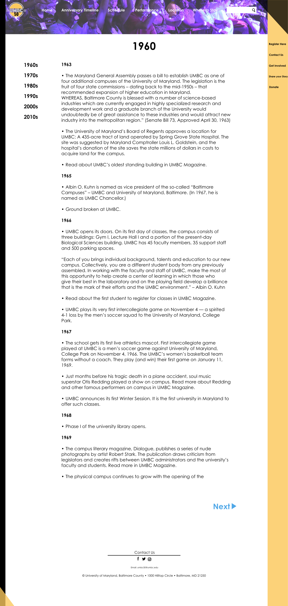
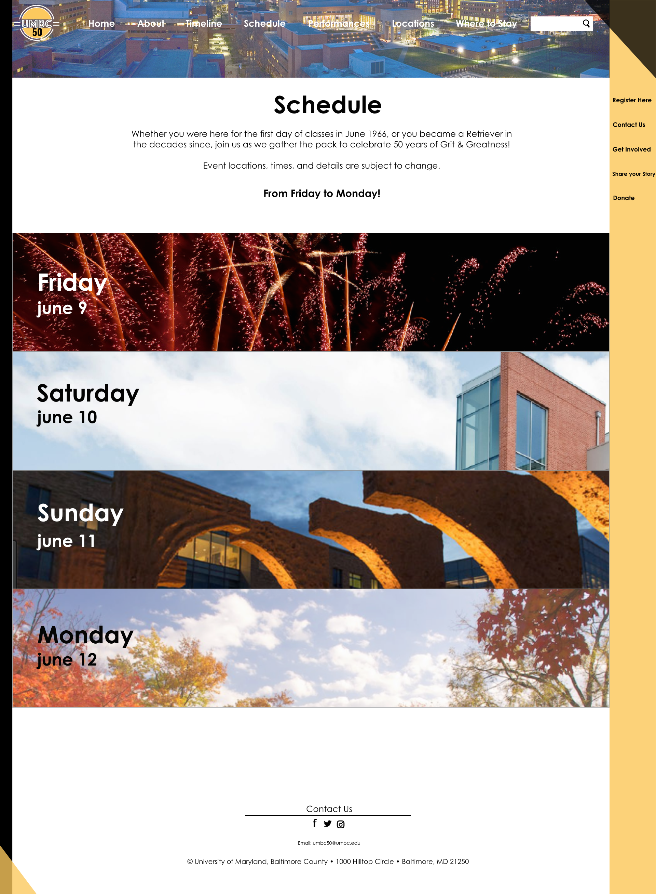
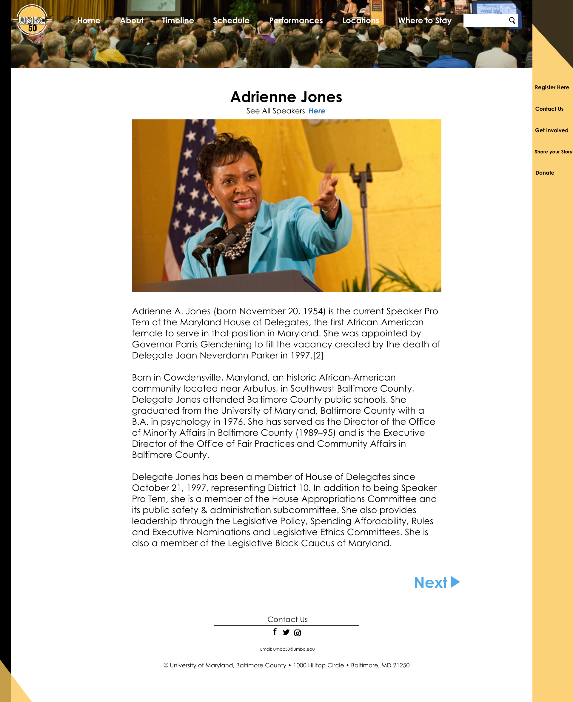
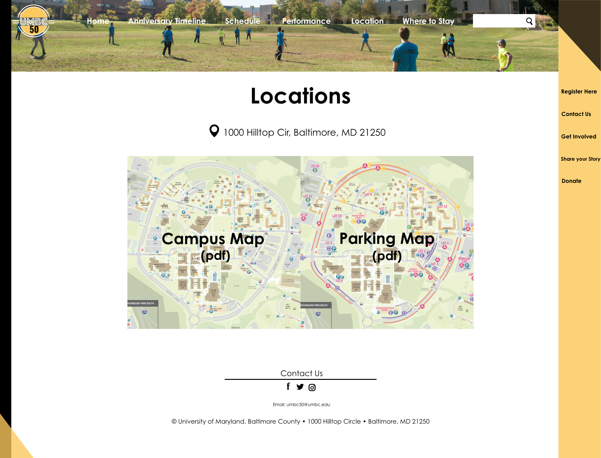

Prototype Design for UMBC50 Website
The images below are the prototypes of my redesign version of UMBC50 website.
The contents included are the home page, about the anniversary page, timeline page, schedule page, performers and speakers page, locations page, where to stay page, registration page, contact page, get involved page, share your story page, and donate page. The entire prototypes are made by using Adobe Xd.
-
Home Page

-
About the Anniversary

-
Timeline

-
One Example of the Timeline
 -
Schedule
 -
One Example of the Schedule

-
Performers

-
Speakers

-
One Example of the Speakers
 -
Locations
 -
Campus Map

-
Parking Map

-
Where to Stay

-
Register Here

-
Contact Us

-
Get Involved

-
Share your Story

-
Donate